Buddy discovered a carrot at the plant nursery and immediately revised his opinion of gardening.
Until then, the whole expedition had seemed to involve replacing things they had already owned. Pots. Soil. More pots. Heather stood comparing two blue ones while Neet inspected a sack for surviving monkeys. Buddy had liked the nursery. Nothing there had asked him to help.
Then he reached the vegetable display.
A bunch of carrots lay beside a pot of leafy carrot tops. Buddy sniffed the bunch, then the pot, then the bunch again. This was excellent. Someone had invented a way of keeping snacks outdoors.
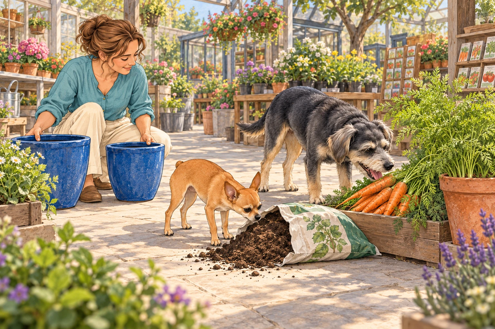
Heather gently guided his nose away. “Those belong to the nursery, sweetheart. We'll grow our own.”
Buddy followed her hand to a packet with a carrot on it. He followed that packet all the way to the counter.
Neet joined him. “What's in there?”
“Carrots.”
Neet sniffed. “Small ones.”
Buddy pressed his nose against the paper. They were extraordinarily small. He assumed Heather had a plan.
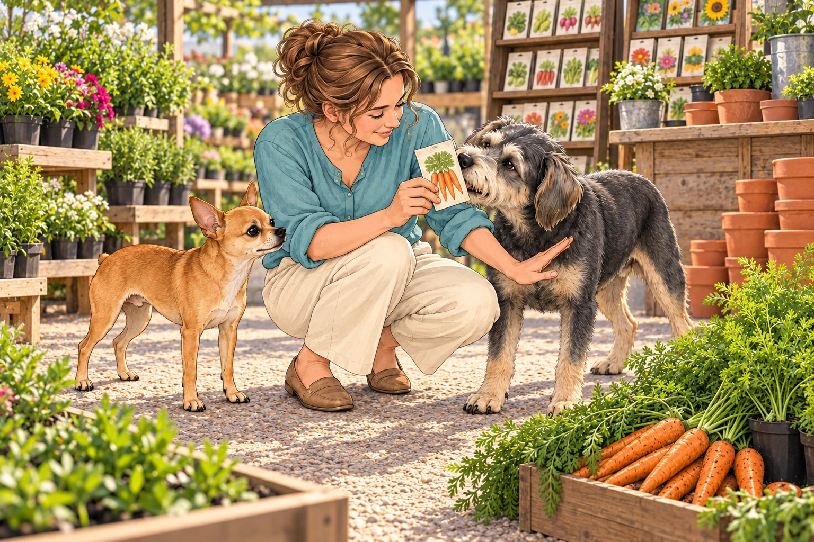
The aftermath of the monkey invasion had left the rooftop garden at Priya's bungalow in ruins: upturned pots, shredded leaves, and soil scattered across the floor. Heather resolved to restore it to its former glory—and perhaps make it even better. With Neet and Buddy by her side, she had ventured to the local nursery for supplies.
The trio returned with an assortment of pots, bags of soil, and seeds for vegetables and fruits. Heather set down the new blue pots beside the cleared beds, rolled up her sleeves, and smiled.
“Alright, team. Let's bring this garden back to life!”
Buddy selected a patch of shade beside the wall. From there he could watch the carrot packet. Neet selected a job before Heather could give him one.
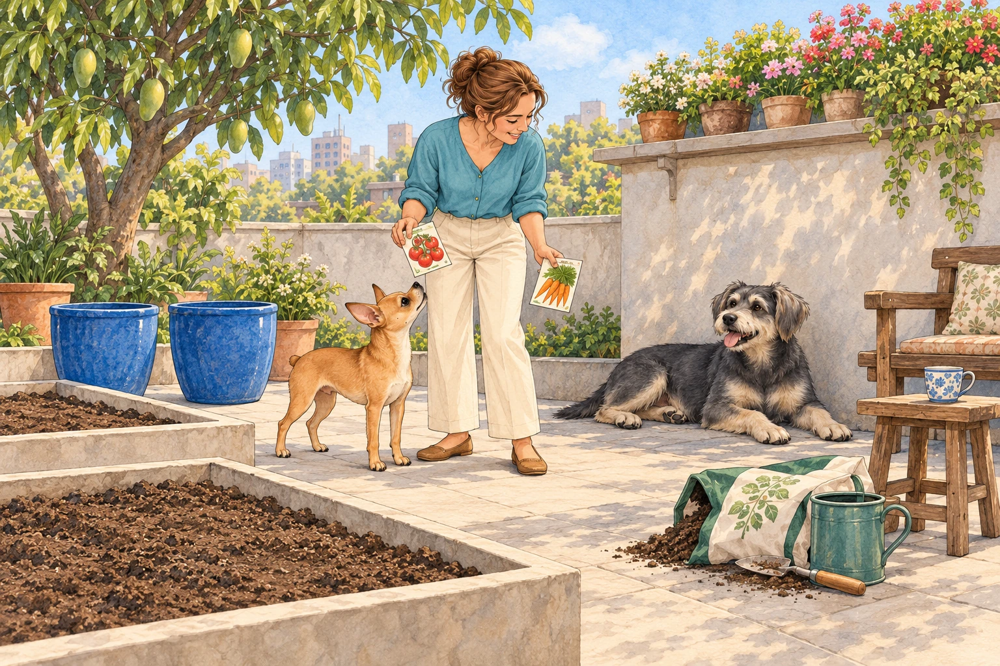
He darted to the seeds, grabbed the packet labeled “Tomatoes” in his tiny teeth, and shook it ferociously.
“Neet! Stop!” Heather chased him around the terrace. “Those are seeds, not toys!”
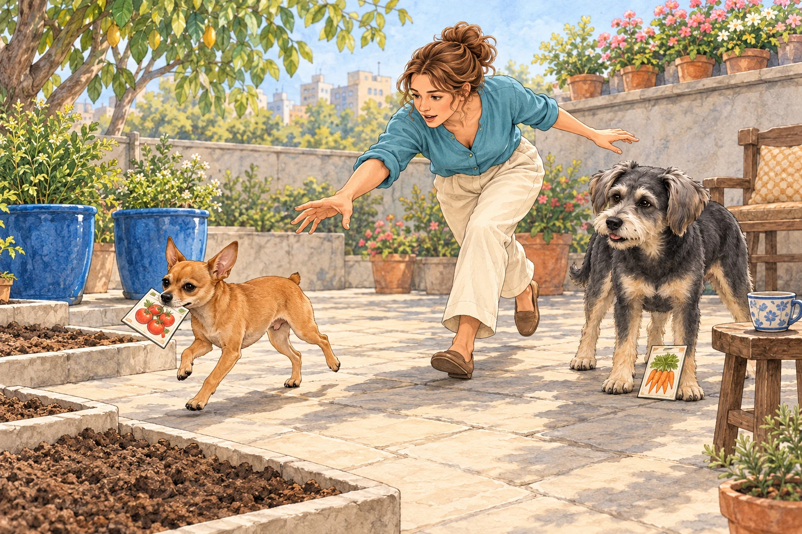
Neet flung the packet into the air. Seeds scattered across the soil beds and into Heather's chai cup. He pranced victoriously, his tiny nub twitching.
Heather lifted the cup and stared into it.
“Lovely. I'm growing lunch in my breakfast.”
Buddy checked the carrot packet. Still closed. He moved nearer to it.
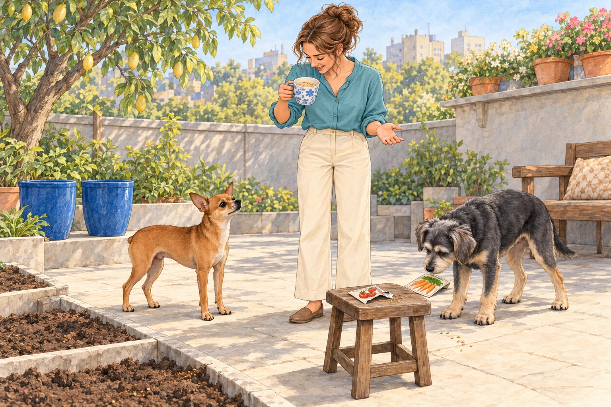
Neet leaned forward to inspect his work. Heather set her cup on the stool behind him, picked up the torn packet, and shook the few remaining seeds into her palm.
“These ones are going where I put them.”
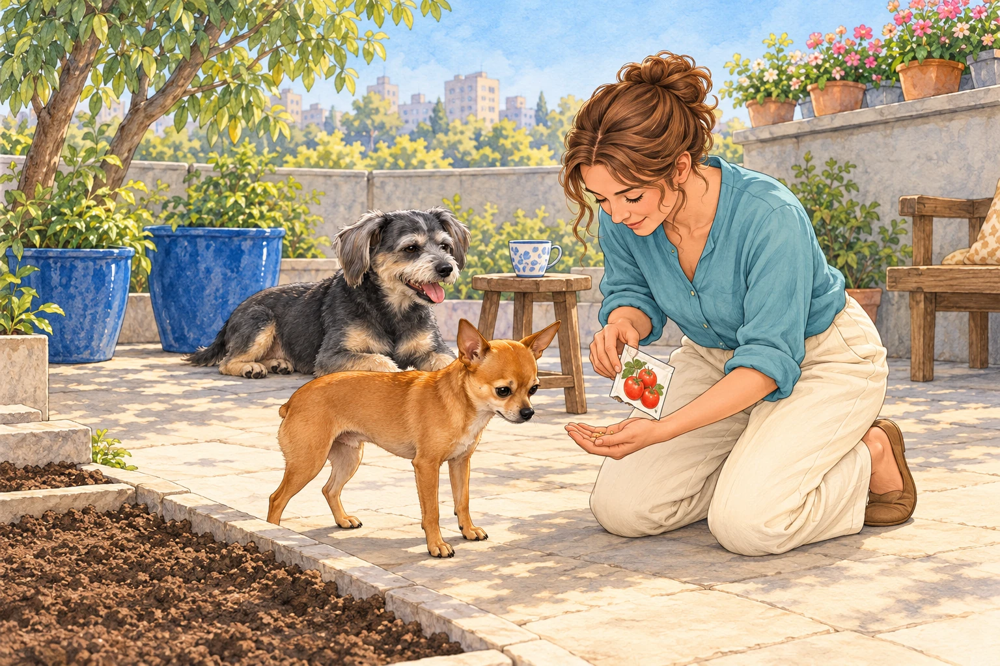
She planted them in a row and left the empty paper beside the stool. Neet inspected it. It had performed splendidly. He hoped it would be asked to perform again.
Buddy watched Heather prepare the carrot bed. She smoothed the soil, made shallow lines, and scattered something so small he could barely see it. He leaned closer. Nothing smelled like the nursery bunch.
Heather put an orange plant marker at the end of the row. “Carrots here.”
Buddy's ears lifted. Here, then. This was his place.
He stationed himself beside the bed while Heather turned to the spinach. The breeze carried damp earth, crushed leaves, and the faint smell of the mango tree. Buddy enjoyed all three. He was going to enjoy carrots considerably more.
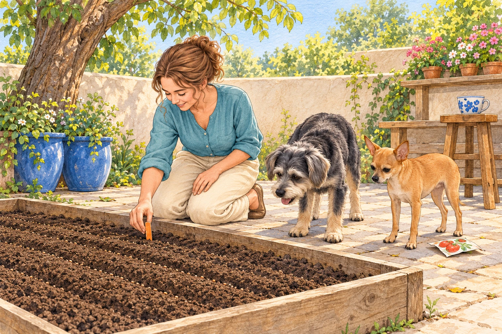
Something scratched along the boundary wall.
A squirrel perched above him, nose twitching. Its eyes moved over the new beds.
Buddy stood.
“No,” he said.
The squirrel took a step.
Buddy bolted after it, barking as he skidded through the freshly spread soil. The squirrel outmaneuvered him easily, scurrying up the tree beside the wall. Buddy stopped below it and looked back at the long trail of paw prints. He had reached the tree very quickly. The carrots had come off considerably worse.
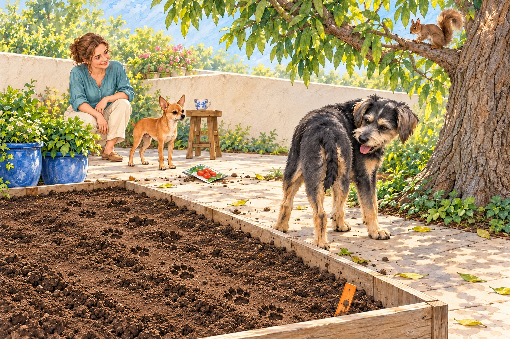
The squirrel returned to the wall. Buddy lifted a paw, ready for another attempt.
“Buddy, no! The carrots go there!” Heather exclaimed.
He looked down at his raised paw. Beneath it lay the next perfectly smooth stretch of soil.
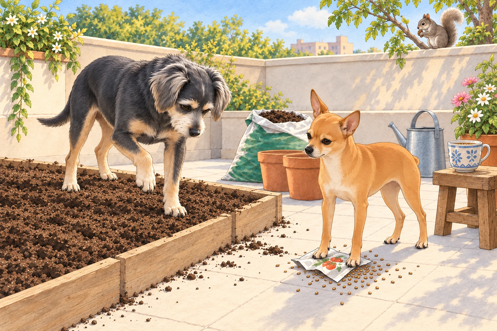
Buddy turned carefully toward the bare terrace. Heather knelt to smooth out his tracks. He watched her finish, then took the long way round the bed to reach the wall.
The squirrel could keep the tree. It could not have lunch.
“You nearly caught it,” Neet told him.
Buddy looked at the repaired soil. “I caught something.”
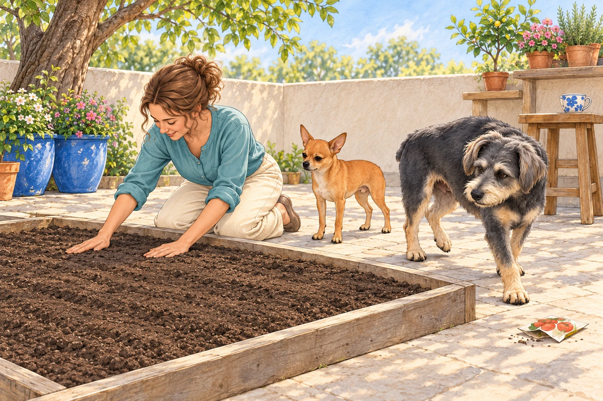
Heather replaced the orange marker. Buddy stationed himself beside it again. This time his paws stayed on the stone.
When the squirrel moved, he moved along the bare edge. When it stopped, he stopped. When it climbed the tree, he sat beneath the wall and watched it disappear through the leaves.
He had managed that without touching a carrot. He was pleased with the improvement, though he would have preferred to see a carrot before congratulating himself.
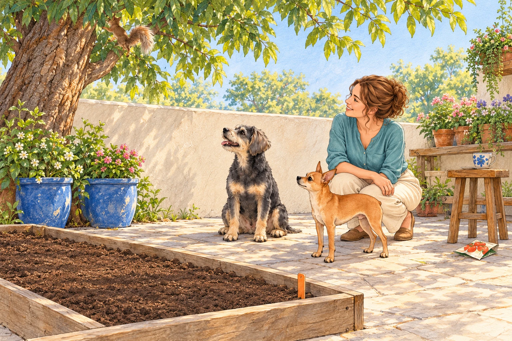
Heather placed a garden gnome near the flower pots. She had barely turned her back when Neet noticed it. His Dorito-shaped ears shot up, and he froze, staring at the ceramic figure as if it were a mortal enemy.
The gnome smiled back.
Neet moved left. The gnome kept smiling. He moved right. Same smile.
Buddy came over, sniffed the pointed hat, and lost interest.
“It's a pot with a face.”
“Then why is it looking at us?”
Buddy glanced at the empty flower pots. He was not starting this with all of them.
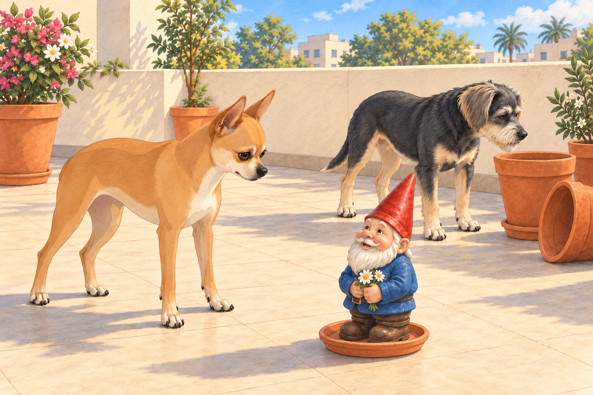
Neet circled the gnome. On the far side he discovered that it was carrying a tiny painted basket.
“What's that for?”
Buddy looked at the basket. Then he looked at his carrot bed.
He stepped between them.
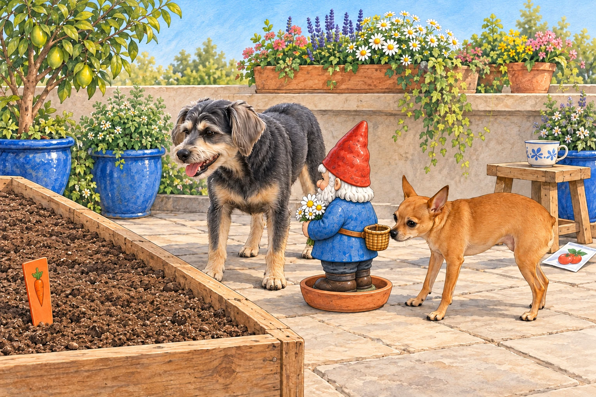
Neet took this as confirmation. With a growl, he launched himself at the gnome, barking furiously and clawing at its base.
“Neet, it's just a gnome!” Heather said, doubling over with laughter.
The gnome did not help her explain.
Neet swiped again. The figure rocked against the edge of its saucer with a small click, and a chip fell beside it. Buddy stepped back. A ceramic basket was probably not the greatest threat to the carrots after all.
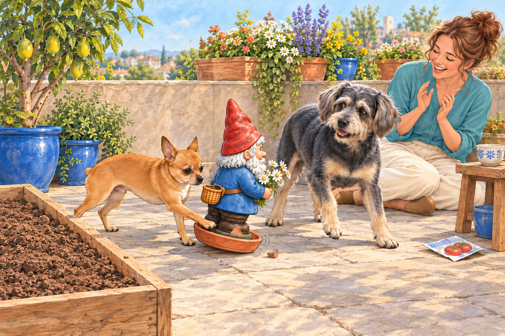
Heather scooped Neet up, his legs still flailing. “Okay, hero, the gnome is harmless.”
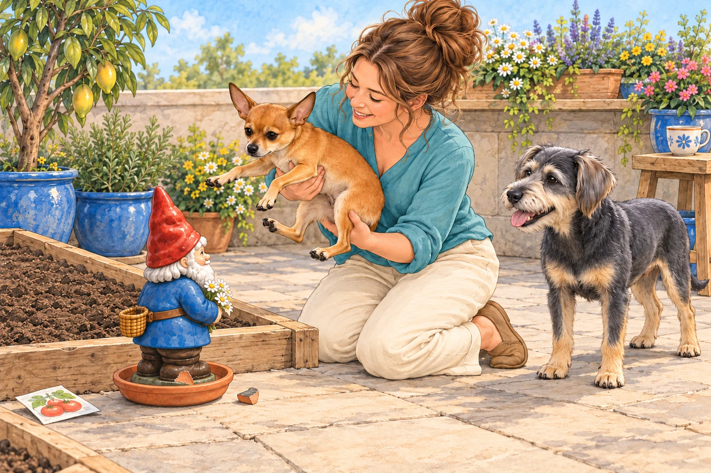
She set him down a safe distance away, collected the chip, and moved the gnome onto a broad shelf among the flower pots. Neet stood below it. The suspect had acquired height.
Buddy returned to his bed. Heather had finished the spinach, potted a lime sapling, and begun setting up a trellis for the climbing beans. He sniffed near the orange marker. Still soil.
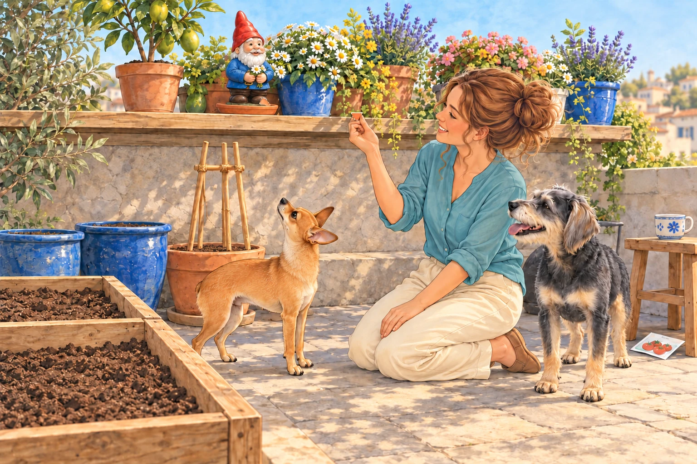
He sat. He stood. He sniffed again.
Heather noticed. “Not today, Buddy.”
He looked at her, then at the patch.
She scratched his cheek with the back of her wrist. “I know. Nursery carrots were much quicker.”
Buddy sighed. He had been very patient, and apparently the garden had failed to notice.
He left the marker where it was and went to investigate what Heather was doing next.
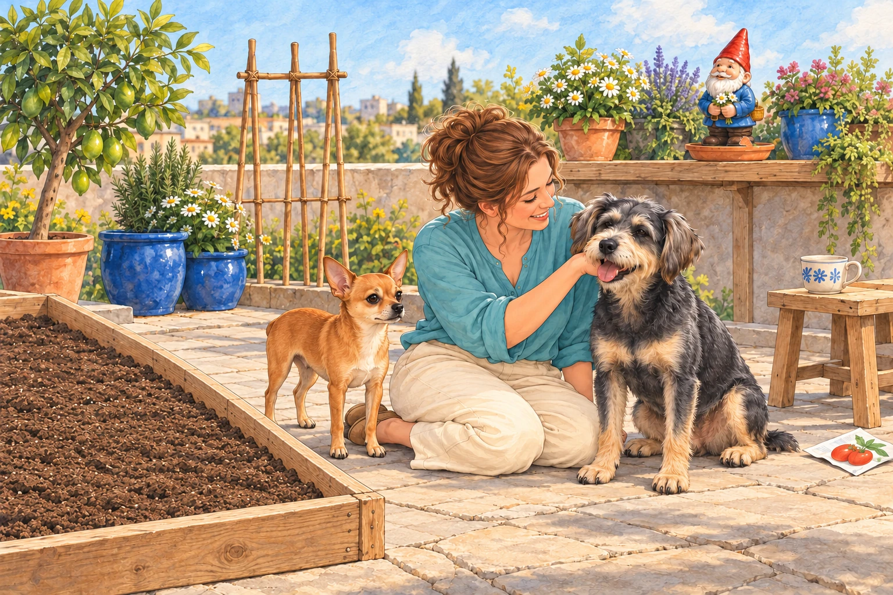
Neet, meanwhile, had found an enemy that moved.
The hose hissed. Water struck the soil, and Neet leaped at the spray, snapping at it as Heather attempted to irrigate the beds. She lifted the nozzle. He sprang beneath it. She moved left. He rushed left.
“I'm watering, Neet.”
He landed with water on his muzzle. So was the enemy.
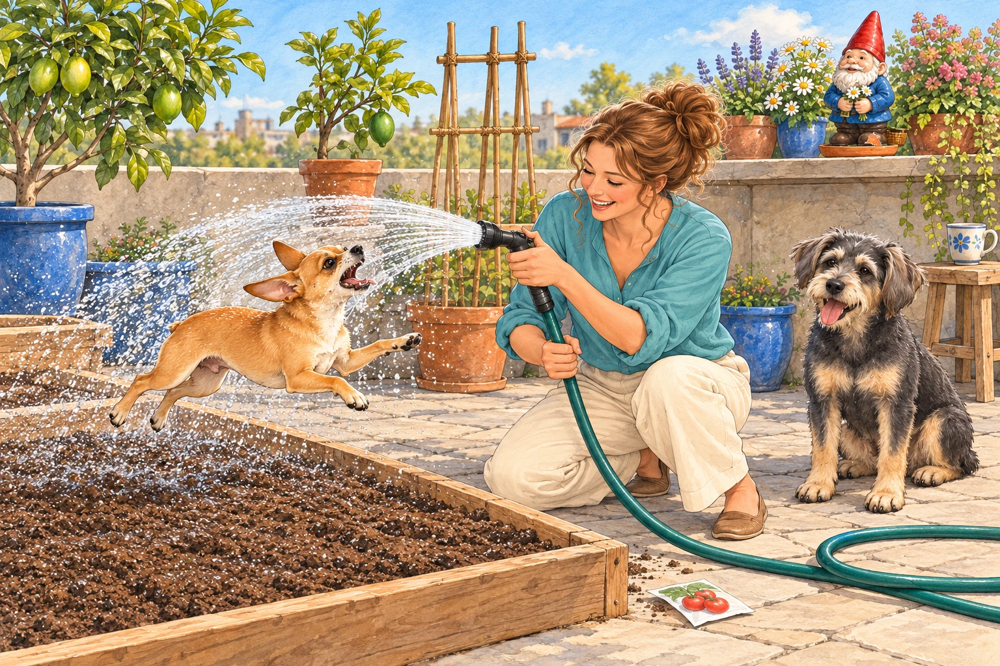
Heather shut off the nozzle. Neet planted all four paws and stared down the last drops.
He had won.
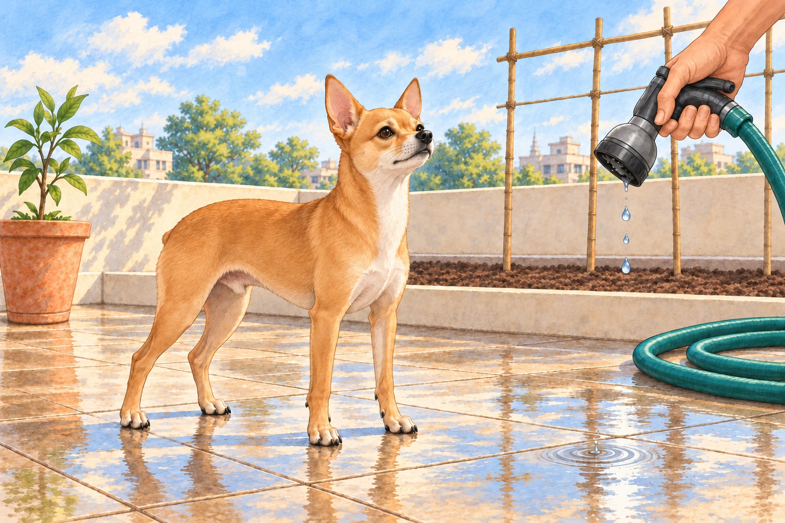
Heather opened it again. Neet's mouth fell open with fresh outrage.
Buddy watched the water swing toward the carrot bed. Neet followed. Heather stopped the flow before he could land in it.
“Out of there. Both of you.”
Buddy was already out. He had very strong views about remaining out. Neet was crouching for another attack.
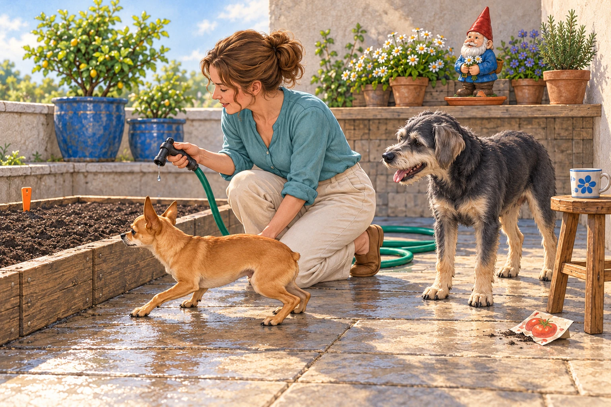
Buddy glanced at the shelf. The gnome would be no help. The empty tomato packet still lay beside the stool.
He picked it up.
Paper crackled. Neet turned one ear.
Buddy shook it. Nothing happened to the garden. Nothing fell in the chai. This was an exceptionally good packet now.
Both Neet's ears turned.
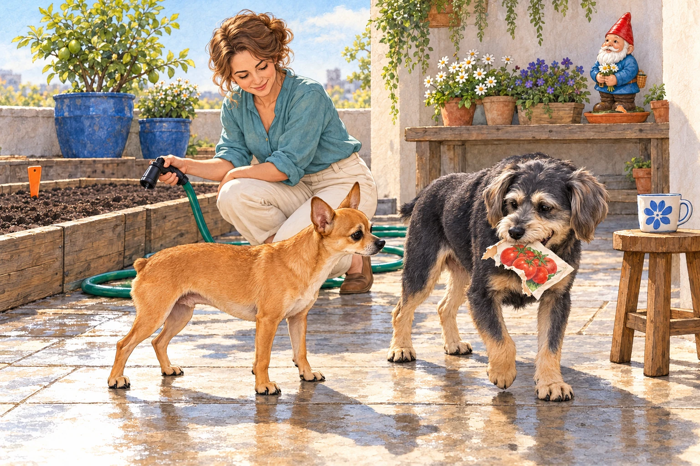
“That's mine.”
Buddy backed onto the bare terrace with it.
Neet followed. “I was using that.”
“You can use it over here.”
Buddy put it down. Neet reached for it; Buddy picked it up again and trotted toward the shade. Neet darted after him, determined to recover his equipment. Behind them, water began falling steadily into the beds.
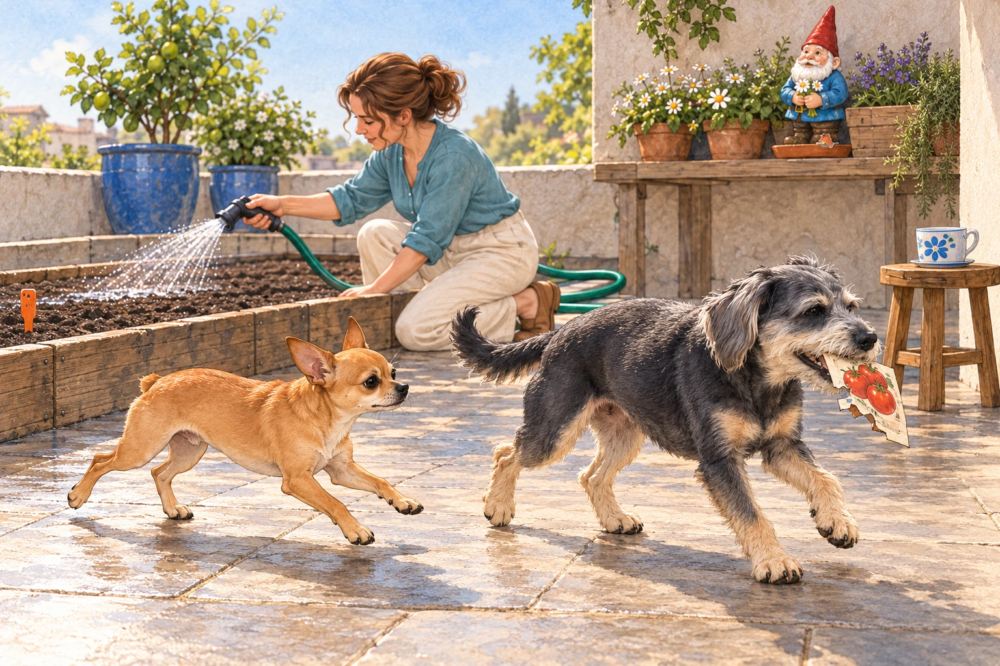
Buddy turned beside the wall. Neet turned too. Buddy stopped. Neet stopped, nose nearly touching the paper.
Buddy had meant to occupy him. He was enjoying it rather more than expected.
“Give it here.”
Buddy put it down between his paws. Neet took one careful step.
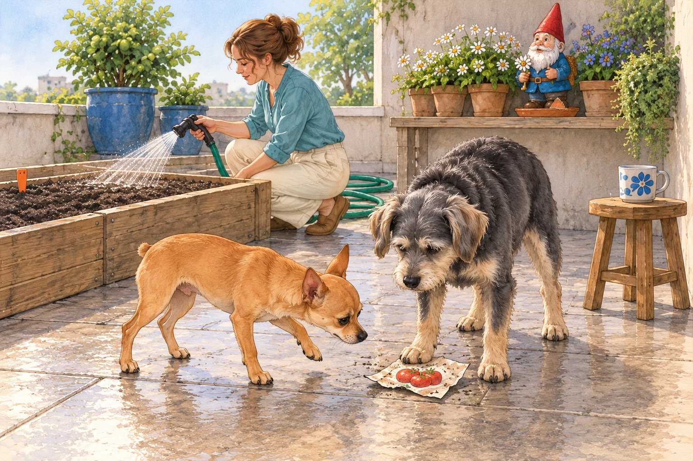
Heather's hose clicked off.
Buddy lifted his head. The carrot soil was dark and damp, smooth except where water had settled it. Heather stood beside the finished row, smiling at them.
“Thank you. Whatever that was.”
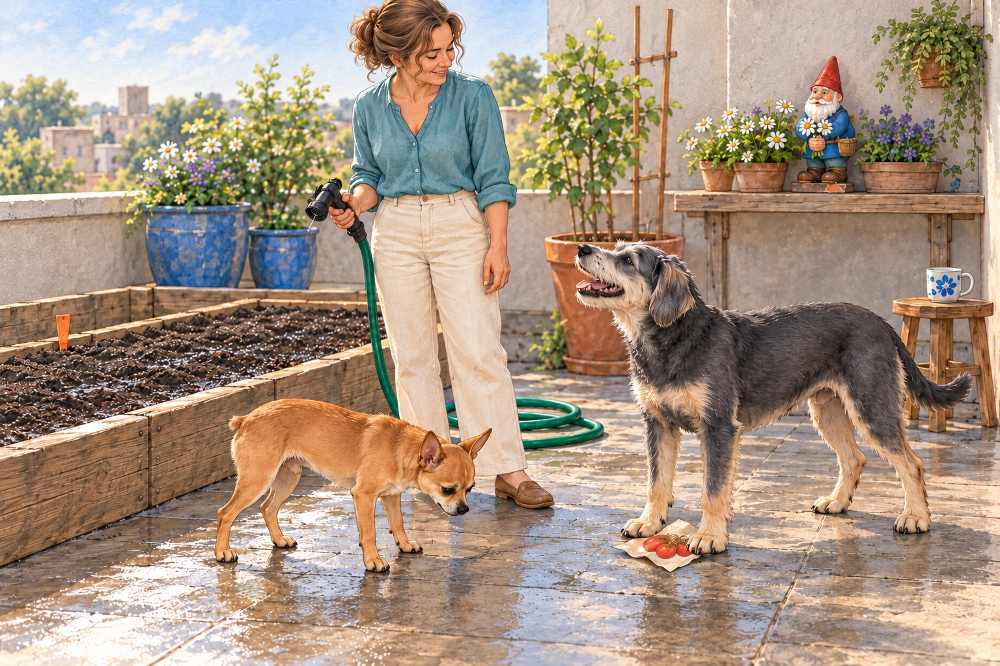
Neet snatched the packet and shook it triumphantly. A corner tore off. Buddy watched it flutter onto the stone.
It had served two gardeners now.
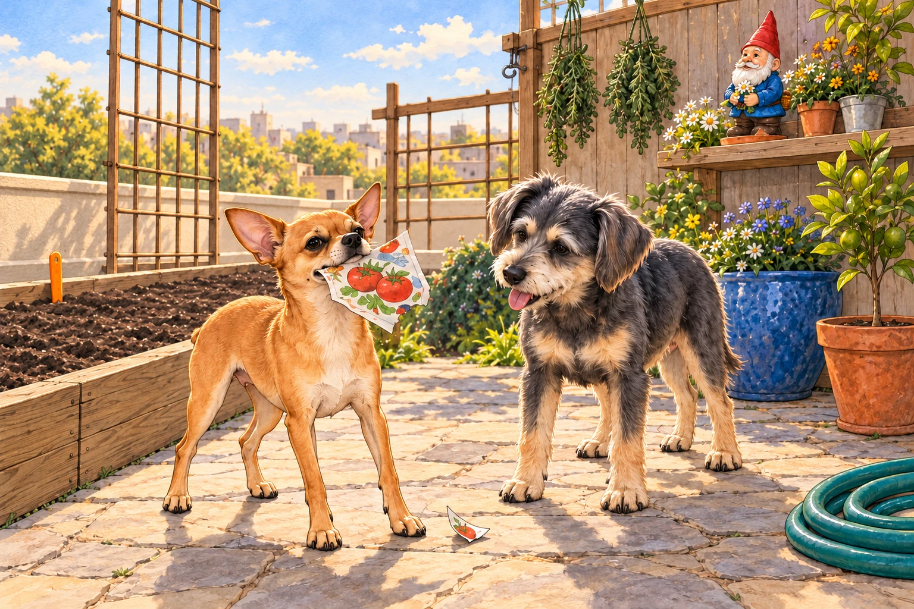
By evening, the garden was back in shape, albeit with some unplanned creative touches from the dogs. The lime sapling stood upright, the bean trellis was ready, and the herbs hung safely above their heads. Heather rinsed her cup and set it on a higher shelf. She had learned something about planting, too.
Buddy made one last circuit along the bare edge of his bed. The squirrel sat in the tree. The gnome sat on its shelf. Neither was eating carrots. He left the orange marker undisturbed and went to Heather.
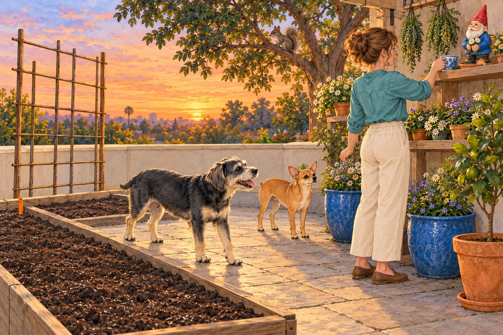
As the golden hues of sunset bathed the rooftop, she sat on the bench and pulled both dogs close.
“You two might be the most unpredictable helpers,” she said, scratching Neet behind his ears and stroking Buddy's soft fur. “Tomorrow, you can supervise from here.”
Buddy looked at the carrot patch from the bench. Excellent view. No footprints required.
Neet let out a satisfied yap, while Buddy gave a contented sigh, resting his head on Heather's lap. The trio watched the sky darken, the first stars twinkling above their newly reborn garden. Heather's eyes fell on the newly chipped gnome. Neet was watching it too. She moved his paw gently back onto the bench.
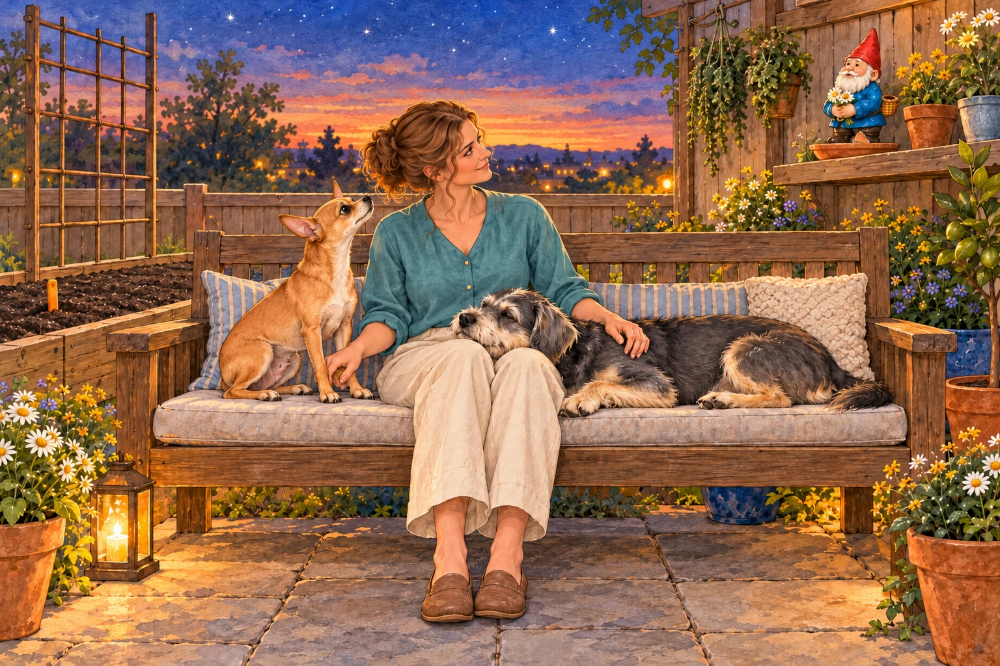